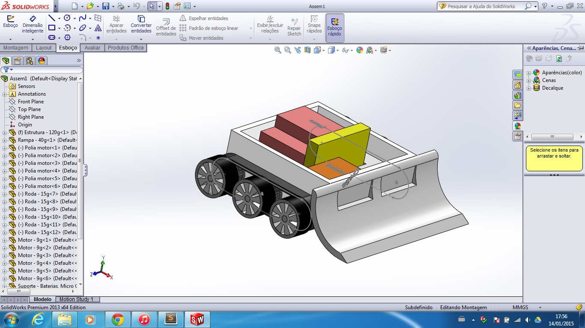
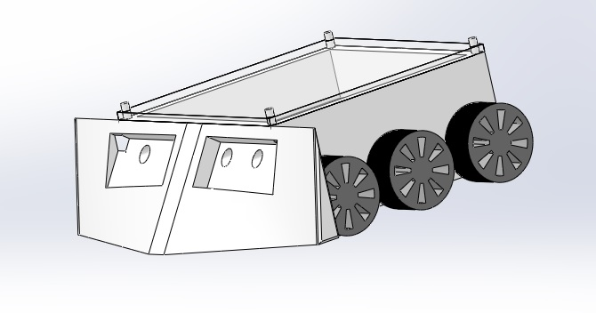
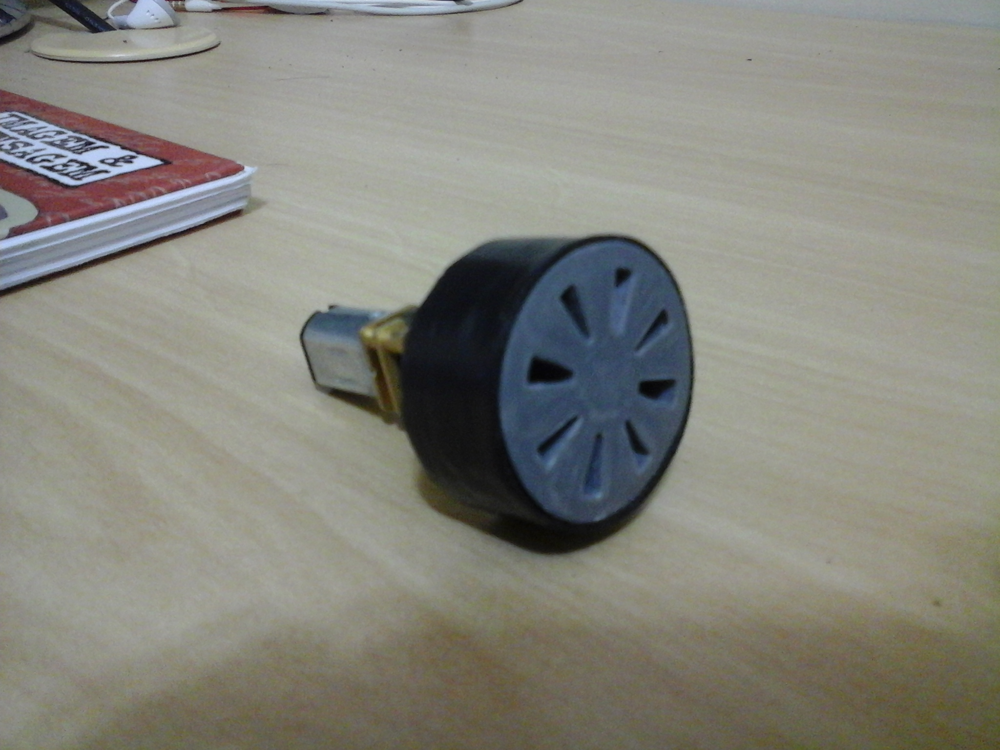
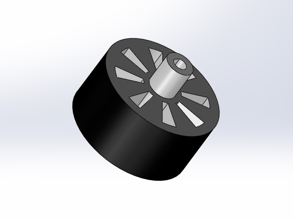

O projeto do Mini sumô se iniciou em janeiro de 2015 e ainda está em andamento. O principal desafio deste projeto é a construção de um robô que não ultrapasse 500g concilinando com um espaço interno suficiente para os sensores, atuadores e eletrônica presentes. Para isso, o primeiro passo foi a construção do projeto no SolidWorks. O projeto passou por algumas mudanças como na figura abaixo.
Até chegar ao desenho atual. Em que sua rampa foi modificada para maior área de atuação e para que os sensores de ultrassom atingissem um ângulo adequado para a programação.
O próximo passo será a impressão do projeto em uma impressora 3D, através do apoio da gip3D, um projeto especializado na impressão e estudo de impressoras 3D da própria UTFPR. Algumas partes como as rodas já foram concluídas.
 Para não ocupar muito espaço e manter o peso pré estabelecido pelas regras, foi decido entre os membros em usar dois sensores de ultrassom e um sensor infravermelho. Os sensores de ultrassom serão usados para localizar o adversário e o infravermelho para que o robô não saia do Dojo, local onde acontece a disputa.


Gostaríamos de agradecer a todos que acompanharam o nosso trabalho... Leia mais »

A Crossbots participou em São Paulo no dia 8 de Outubro da Freescale Cup... Leia mais »

A Crossbots participou de umas das maiores competições de robótica... Leia mais »